Welcome to HymenopteraMine¶
HymenopteraMine is powered by InterMine and provides a user-friendly way to access genomic, proteomic, interaction and literature data. HymenopteraMine is a part of the Hymenoptera Genome Database.
This tutorial is aimed at giving users an introduction to the different parts of HymenopteraMine and how users can make the most of HymenopteraMine.
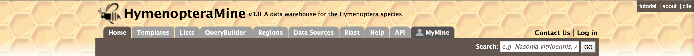Overview of HymenopteraMine¶
Before going into details, please go through this brief summary about the layout of HymenopteraMine.
Home – The home page for HymenopteraMine.
Templates – Shows the lists of templates that users can use based on the nature of their query.
Lists – Takes the user to a list page where they can upload their list of genes and perform enrichment analyses. Users, once logged in, can also save their lists for future use.
QueryBuilder – page where users can build custom queries by browsing the HymenopteraMine data model and customize their results. Users can also download the created query as XML.
Regions – a Genomic Region Search page where users can enter genomic coordinates and fetch features that fall within the interval. Users can also extend the interval to increase the range of search.
Data sources – a page where all the data sources, their links and the date of download is specified in a tabulated format.
Blast – a Blast page where users can BLAST their sequence(s) of interest with the Hymenoptera species reference genome, CDS sequences and protein sequences. Help- a page for guidance, when working through Hymenoptermine. API – a page where users can discover more about the InterMine API to programmatically access HymenopteraMine.
MyMine – Once users are logged in, MyMine serves as portal for accessing saved lists and saved templates. Users can also check their account details and manage their account using MyMine.
Searching in HymenopteraMine¶
There are several different ways for users to query HymenopteraMine.
‘Quick-search’¶
The ‘Quick-search’ enables users to search keywords from any of the datasets on HymenopteraMine. The quick-search box is on the main page and on the upper-right hand corner of each page
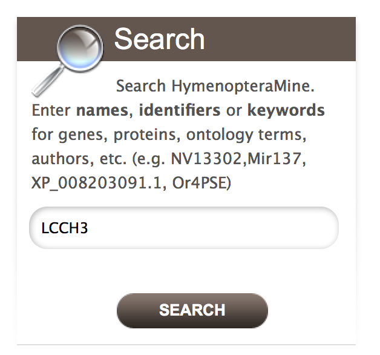 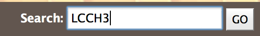Users can input their gene name, gene identifiers or keywords and search HymenopteraMine. Users can make use of wildcard character ‘*’ to get all results that matches their query.
Lets consider gene ‘LCCH3’ as an example. Enter ‘LCCH3’ in the search box and click ‘Search’. The results page is tabulated and shows a summary about your query.
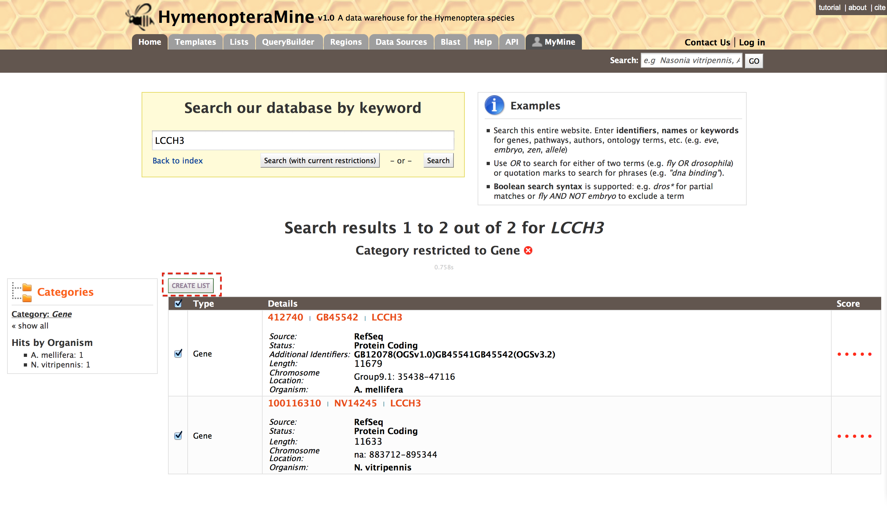Users can filter the results based on ‘Category’ or ‘Organism’. The score column in the result table indicates the similarity of your query to the result fetched by HymenopteraMine.
The results page can also be converted to a list. To enable this feature click on ‘Gene’ in ‘Hits by Category’, marked with a red box.
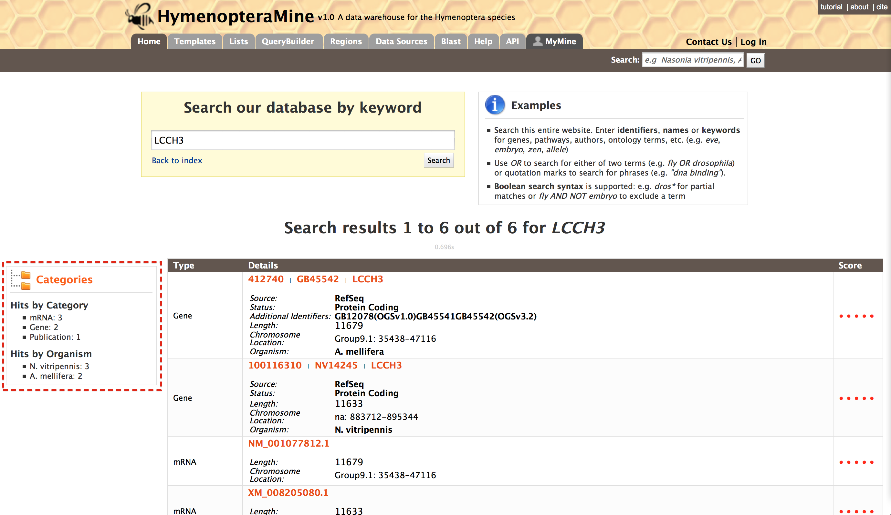This will filter the results for the feature type ‘Gene’ and checkboxes will be available for users to select genes they would like to add to their list. Once the genes are selected, click on ‘CREATE LIST’. List features described later.
Templates¶
Apart from the search box, users can make use of predefined templates by clicking on the ‘Templates’ tab.
The Templates page provides users with a list of templates users can choose based on the nature of their query.
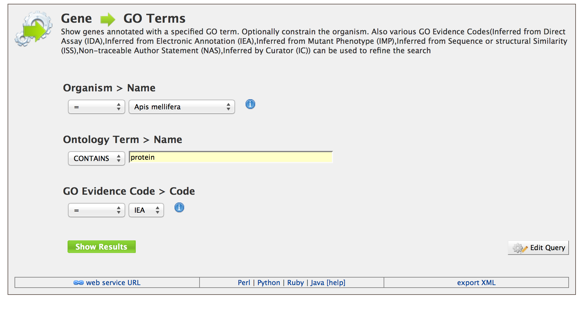Users can also specify a filter for GO evidence code. Lets search for the GO term ‘protein’ with GO evidence code ‘IEA’. Click on ‘Show Results’.
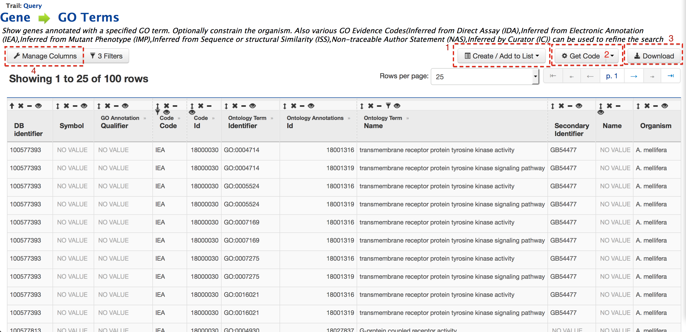The result page shows all the genes having the Gene Ontology term ‘protein’ in their annotation. Users can create or add these genes to a list, by clicking on ‘Create/Add to List’ (Box 1) to perform further analyses. List function described later Users can get the code for the query in Perl, Python, Java, Ruby, JavaScript or XML by clicking on ‘Get Code’ (Box 2). Users can also download the search results, by clicking on ‘Download’ (Box 3), as tab-delimited, comma-separated values, XML or JSON. If the results are genomic features, which is true for the current example, then users can download the results in GFF3 and BED format.
Users can also customize the layout of the result page by clicking on ‘Manage Columns’ (Box 4).
Query Builder¶
We have provided templates suitable for different types of queries but if users need more fidelity in their search they can make use of the QueryBuilder. The possibilities of queries using the QueryBuilder are endless. You can format the output the way you want and constrain your queries to perform complex search operations.
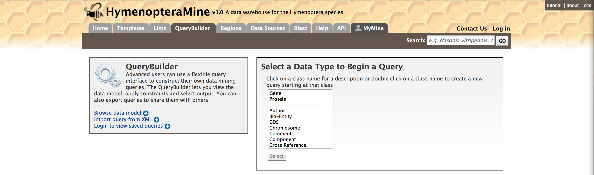First lets select ‘Gene’ as a Data Type in the QueryBuilder. Then click on ‘Select’. This will take you to a Model browser where you can select the attributes for the feature class ‘Gene’.
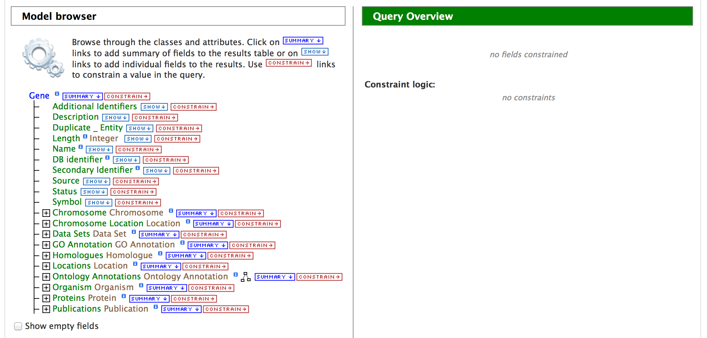Lets consider three scenarios for using the QueryBuilder,
Querying for Protein Coding genes:
Click on ‘Show’ tab for the attributes ‘DB identifier’, ‘Secondary Identifier’, and ‘Symbol’. This indicates the QueryBuilder to show the DB identifier (Primary Identifier), Secondary Identifier and the Symbol for ‘Gene’. Then click on ‘Constrain’ tab for the attribute ‘Status’.
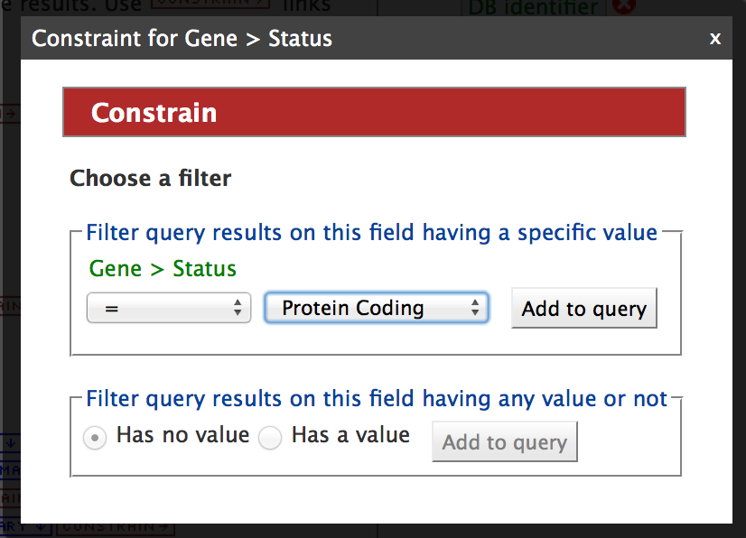Click on the drop down list for Status and select ‘Protein Coding’. Then click on ‘Add to Query’.
The Model Browser should resemble the image below,
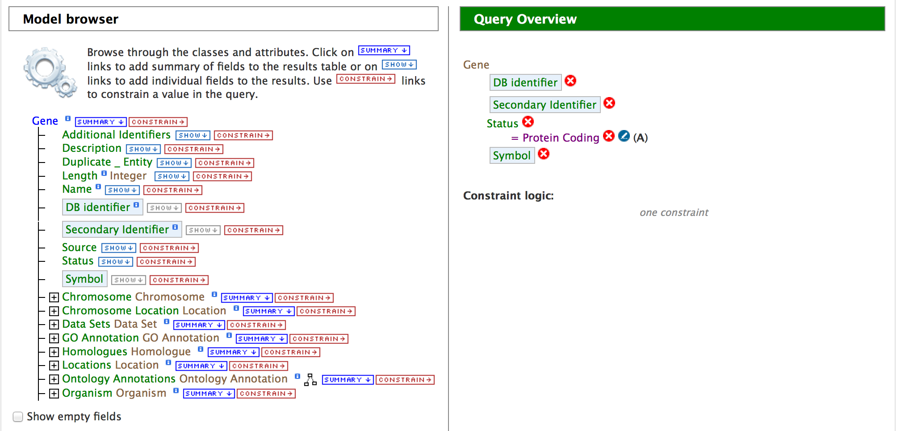Now if you click on ‘Show results’ it would show all the genes that have status ‘Protein Coding’ as shown below:
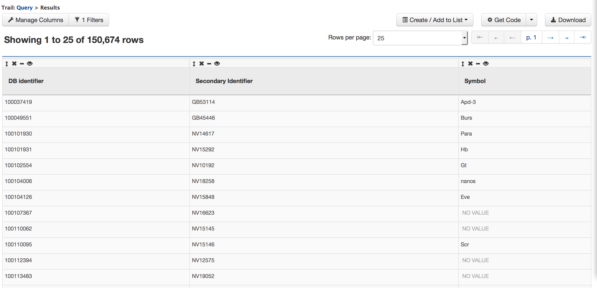ii. Querying for Protein Coding genes on a particular chromosome Users can customize this query by adding another constraint for Chromosome.
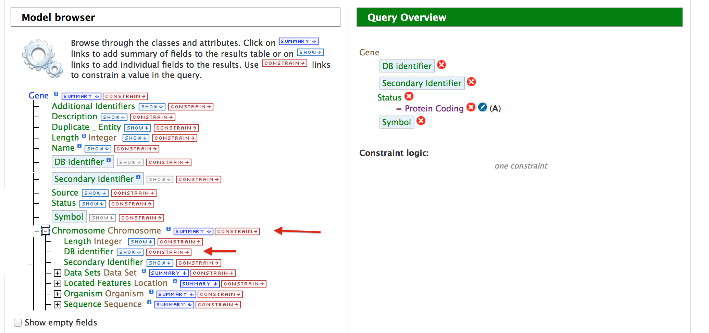While building the query in the QueryBuilder, expand the ‘Chromosome’ feature class and select the ‘Constrain’ tab for attribute ‘DB Identifier’. Enter ‘Group1.1’ in the text box of the pop-up window and then click on ‘Add to Query’. Now if you click on ‘Show results’ the query will result in all the genes that are of type ‘Protein Coding’ on Chromosome with DB Identifier ‘Group1.1’.
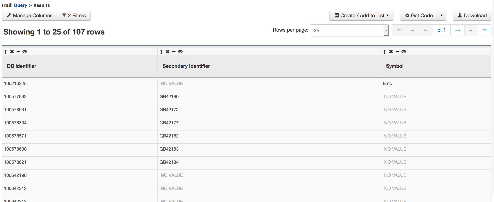iii. Querying for Protein Coding genes on a particular chromosome and theirs exons Users can customize this further by configuring the query to show all the exons for each Gene.
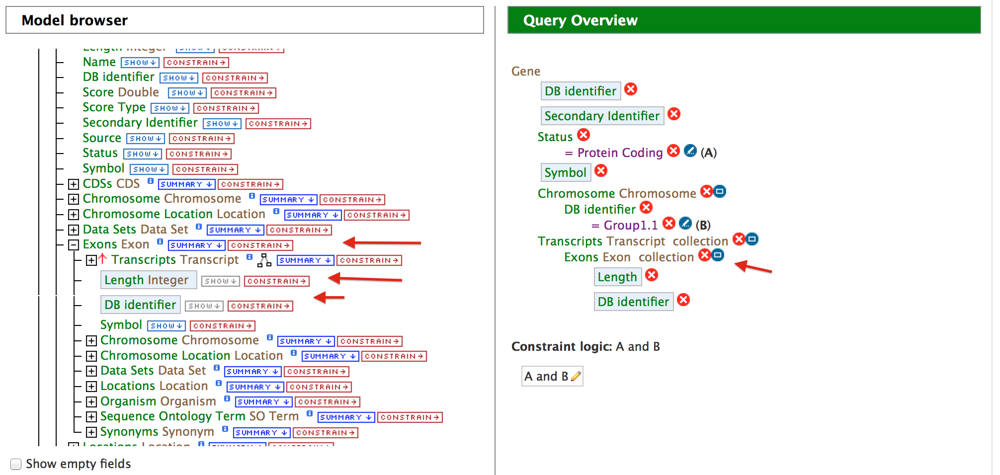Expand the ‘Exon’ feature class and select on ‘DB identifier’ and ‘Length’. To make the output more visually pleasing, click on the blue square near Exon collection in the query overview and you will see a popup like below,
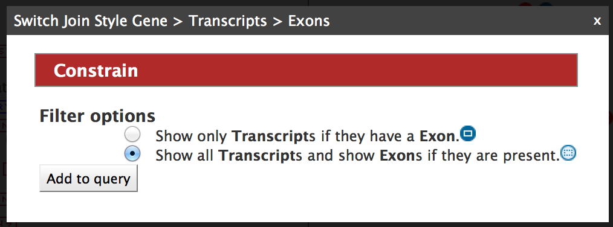Select ‘Show all Genes and show Exons if they are present’ and click on ‘Add to query’.
Now run the query and you should see the following results page,
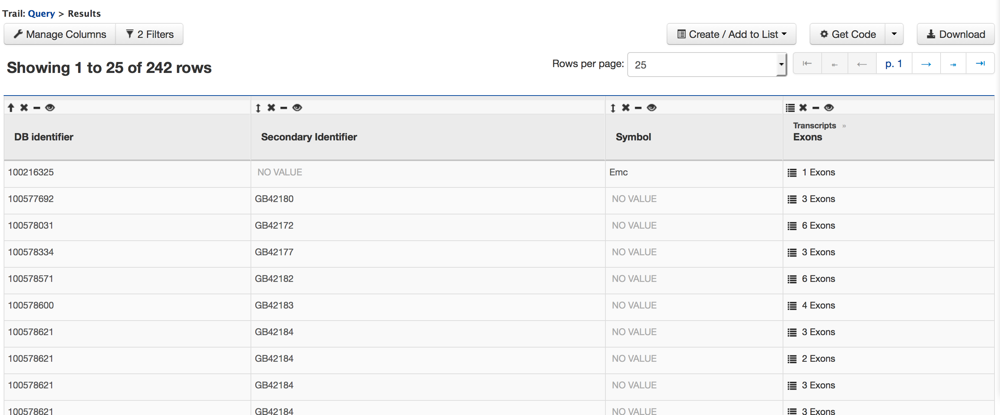There are 107 genes on Chromosome Group1.1 and the gene with NCBI GeneID 100578031 has 6 exons. Users can click on the ’6 exons’ to expand the table with additional rows describing the length and DB identifier for each of the 6 exons.
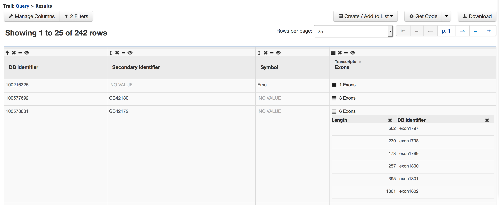Report Page¶
Every query result has a report page and the layout of the report page depends on the data available for a given query. Continuing with the example of ‘Hb’, the report page for this gene is shown below
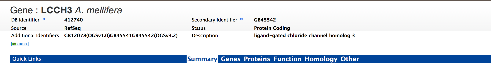The report page provides a complete description for gene Hb. The header of the report page shows the DB identifier. The ‘status’ indicates the type of gene, in this case a protein coding gene. Other possible values are,
· Non Coding – for non coding RNAs
· Pseudogene – for pseudogenes
· Immunogenes – for protein coding genes that are annotated to be a part of the immune system
· Frameshift – for protein coding genes that have a frameshift in their coding frame
· miRNA – for micro RNAs
· rRNA – for ribosomal RNAs
· tRNA – for transfer RNAs
The contents of the report page are divided into categories based on the type of information provided,
Summary:¶
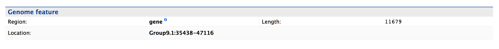Provides a summary about a gene such as length, chromosome location and strand information. Users can also get the complete FASTA sequence of the gene by clicking on the FASTA tab.
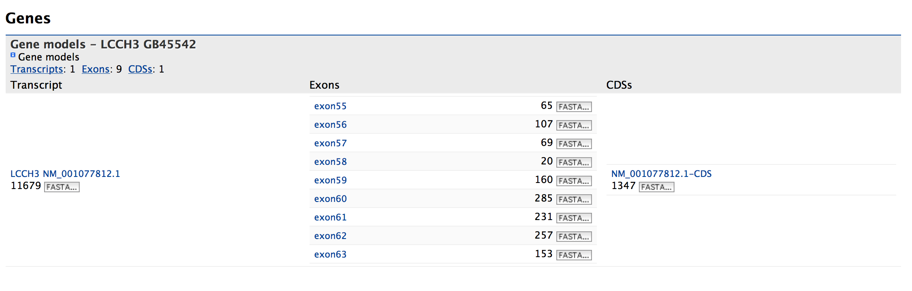This section provides information about the gene model. It displays all the transcripts and exons for a gene. The FASTA sequence of each transcript or exon can be downloaded by clicking on the FASTA tab. Users can also download the coding sequence for a transcript, when available, by clicking on the FASTA tab in the CDS column.
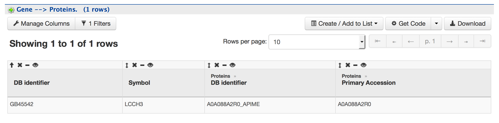This section provides information about the protein product of gene LLCH3. The comments section gives a brief description about the protein along with the UniProt accession.
Function:¶
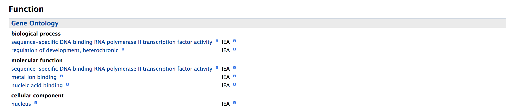This section provides Gene Ontology annotations for a gene. Annotations are divided into three categories,
· Biological process
· Molecular function
· Cellular Component
The GO terms are displayed along with the evidence code indicating how the annotations were derived.
Homology:¶
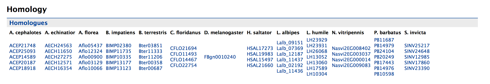The table below gives a detailed information about the homologue, the type of homologue and from which dataset the information was obtained.
Others:¶
This section provides information such as,
Child features – lists all the features that are sub features of the current gene
Flanking regions – lists all the features flanking the current gene
Overlapping features – lists all the features that overlap with current gene
Publications – Publications related to the current gene
Genomic Regions Search
The Genomic Region Search is a tool to fetch features that are within a given set of genomic coordinates or to fetch features that are within a given number of bases flanking a given set of genomic coordinates.
The coordinates have to be of the format,
chromosome_name:start..end
OR
chromosome_name:start-end
OR
chromosome_name start end
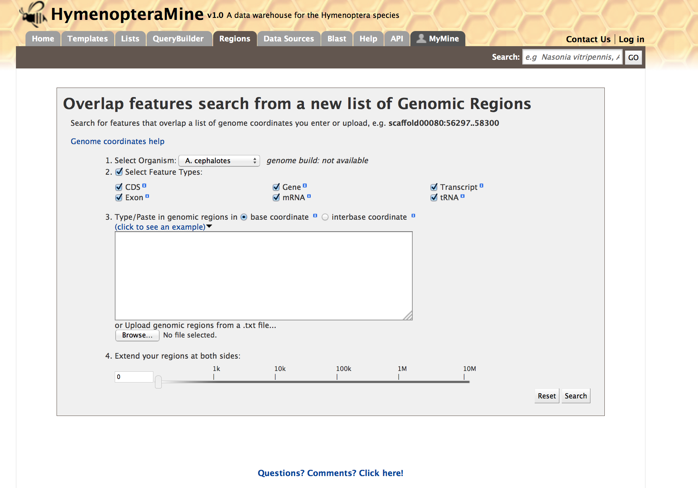Click on ‘click to see an example’ for a representative set of genomic coordinates.
Users can extend the regions on either side of the genomic coordinate using the slider or using the textbox.
Users can also select the type of coordinate system they would like to use: base coordinate or interbase coordinate.
Lets consider the example,
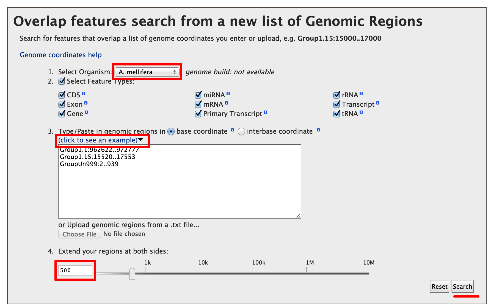Click on the ‘click to see an example’ and extend the region search by 500 bp.
The result page will give a list of features that are present in each of the genomic interval provided in the input.
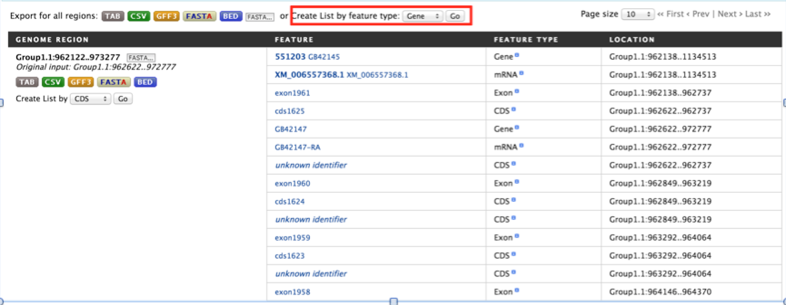The results can be exported as tab-delimited and comma-separated values. If the results have genomic features then they can be exported in GFF3 or BED format. Users can also export FASTA sequences of the features.
If users are interested in creating a list of particular features from the result page then they can filter based on feature type, shown in red box, and click on ‘Go’.
Lists¶
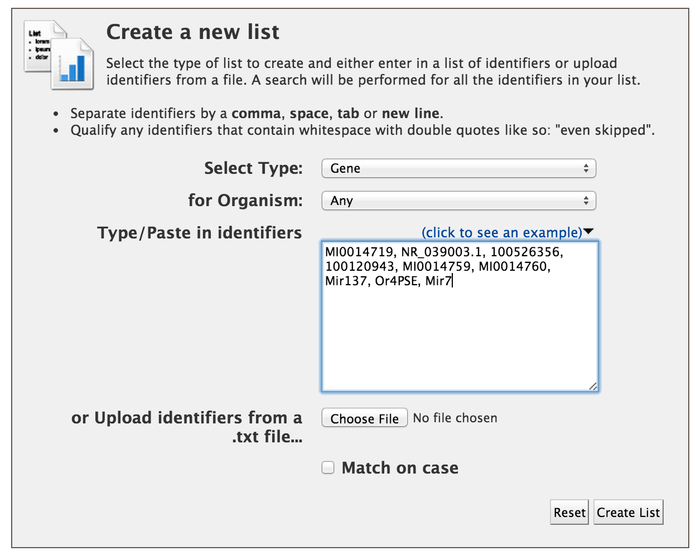Users can create a list of features. The input can either be gene IDs, transcript IDs, gene symbols, etc. The list tool tries to lookup the query throughout the database and will attempt to convert the identifiers to the type selected in the list ‘Select Type’ option.
Lets try the examples provided. Click on ‘Click to see example’ link and click on ‘Create List’.
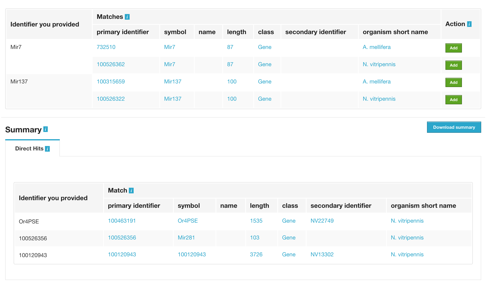The list tool does a lookup of the identifiers and shows you the results. If there are any duplicates, users can decide to add the relevant entries individually. The summary section provides information regarding those identifiers that had a direct hit without any duplicates.
Click on the ones that have proper primary identifier and secondary identifier.
Users can download summary of the converted result.
Then click on ‘save a list of 3 genes’.
This will take users to the following page,
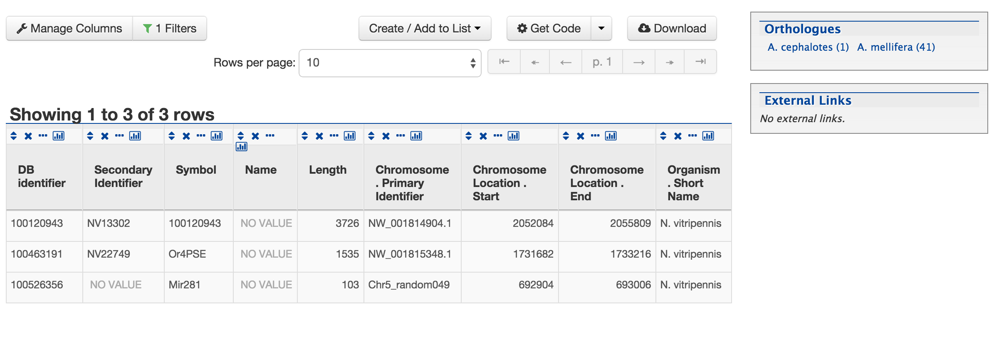This page provides users with widgets to perform analyses on gene lists that they have created.
List widgets
- Chromosome Distribution
- Gene Ontology Enrichment
- Protein Domain Enrichment
- Publication Enrichment
- Pathway Enrichment
- Orthologues
MyMine serves as a portal for users to manage their lists, queries, templates and account details.
- Lists – lists saved by the user.
- History of queries by user – shows a list of most recent queries performed by the user.
- Templates – Templates created by the user or existing templates that are marked as ‘favorite’ by the user.
- Password change – change the password for the user’s account.
- Account details – for updating user preferences.
API¶
For users who would like to programmatically access HymenopteraMine, they can make use of the API.
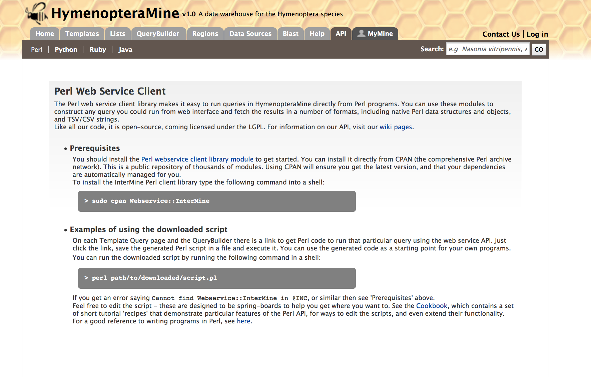Perl, Python, Ruby and Java are the languages supported by the InterMine API.
For more information on the details of the API visit the InterMine Wiki
Data Sources¶
Provides a description of the datasets that are integrated into HymenopteraMine along with their date of download, version or release, citations wherever applicable and any additional comments.
BLAST¶
Users can perform BLAST against the Hymenoptera genomic, CDS or protein sequences using the BLAST page.